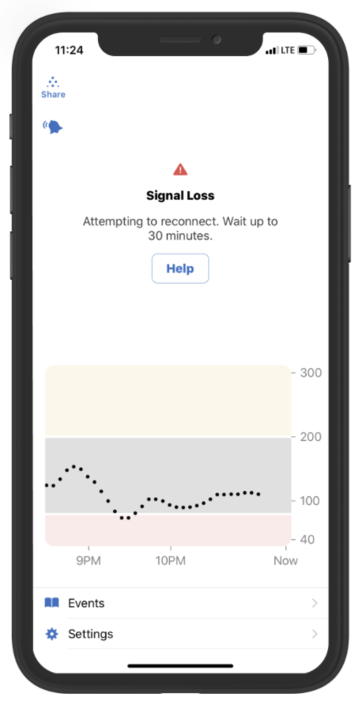
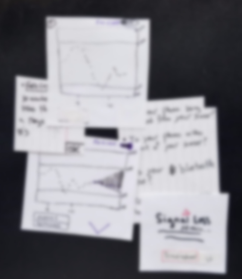
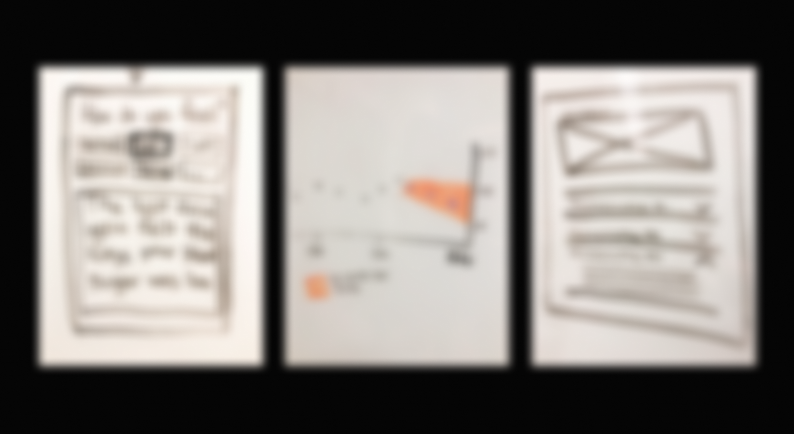
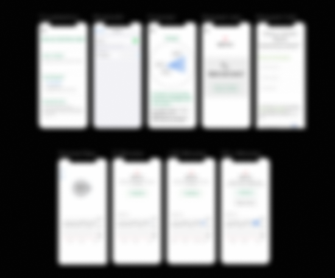
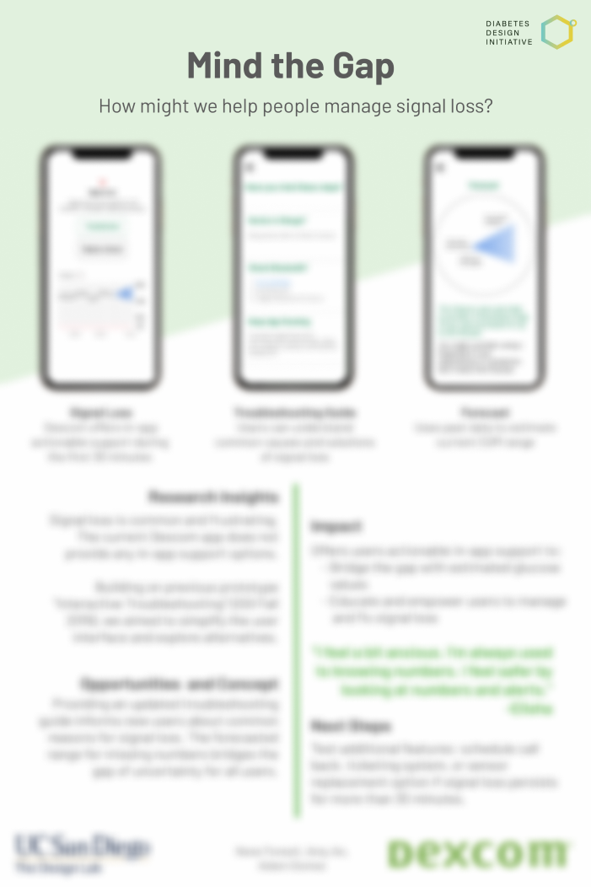

My team was a part of the Diabetes Design Initiative (DDI), a program at UC San Diego’s Design Lab that utilizes human centered design processes in order to create better technology for people with diabetes. DDI partners with Dexcom, a company that produces continuous glucose monitoring (CGM) systems for diabetes management.
What is a CGM?
A continuous glucose monitoring (CGM) device allows people with diabetes to continuously track their glucose levels. CGM systems take glucose measurements and translate that information into dynamic data alerting users if their levels go too high or low. A CGM attaches to the user's body and gives real-time readings every 5 minutes.
One of the key benefits for users with a CGM is that they are able to see their glucose levels continuously. Being able to reliably check these numbers whenever they need throughout their day provides a level of support and stability. Therefore when these numbers are unavailable, users lose this sense of support and begin to worry, leading to a high call volume. Signal Loss is the most common error message that prevents users from receiving readings. This error usually lasts around 30 minutes when the transmitter loses bluetooth connection with the mobile phone.

"How might we help manage signal loss?"
To tackle this problem, my team and I worked through a human centered design process. Our work flow consisted of user research, brainstorm and rapid ideation, low fidelity prototypes, user feedback, and high fidelity prototypes.
User Research:
Key research insights we found to be helpful included the difference in technological ability between younger and older users, the range in familiarity of the current user interface between new and experienced users, and the effect of visuals to efficiently convey complex health related information. Some industry constraints to consider included the nature of changes in the Healthcare industry being slow and incremental due to the many rules and regulations on sharing information.
Low Fidelity Prototypes
Due to these constraints it was difficult to brainstorm incredibly innovative and novel solutions which we learned through early meetings with stakeholders. We knew we had to keep the app accessible to all users and hold the highest standard of integrity for the information the app provides. Our challenge was particularly challenging since we were designing a solution for when important information was not available. Keeping this in mind, we proposed a solution that had distinct user flows for new and experienced users. The feedback we received on our first iteration was that we should break down our proposal into seperate parts. Doing this would allow business leaders to discuss each incremental change and whether to implement it.

More Iterations
After separating our all encompassing solution into many distinct experiences, we further expanded on those ideas and created user flows around each iteration. We then presented each of these experiences to Dexcom users and used their feedback to refine our designs.

High Fidelity Prototype
Ultimately our final presentation to Dexcom stakeholders contained three solutions that could work together or separately to provide an improved user experience when signal loss occurs. We concluded our work by demonstrating our interactive Figma prototypes and presenting our slide deck and poster that outlines our design process and outcomes.
  I've learned so much from this experience from how to best communicate with stakeholders to the intense regulations of the healthcare industry. In addition to strengthening my skills as a researcher and designer, I've learned the importance of word choice and providing options to decision makers and the importance of good design choices for the people who rely on CGMs to live. Thank you to everyone at DDI for creating this program! Our work would not have been possible without the feedback and support from Lars Müller, Heidi Rataj, Colleen Emmenegger, and Ben West.